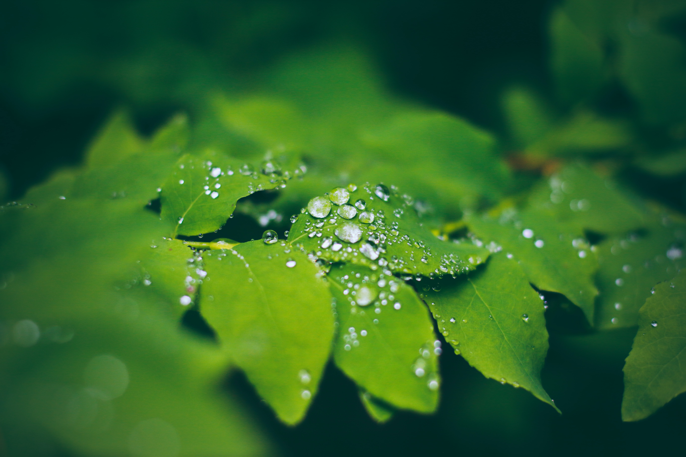

Having plants around makes you happier for many reasons. One is that they make you feel like you are outdoors. This lessens the feeling of being boxed in. This is why all your friends became plant parents during the lockdowns.
Have you ever seen a plant being stressed about everyday life? Plants have a sense of peace around them as they just sit there and grow, patiently. This changes the atmosphere of the house introducing calmness and serenity.
Plants improve the air quality by releasing oxygen into the air and taking up the carbon dioxide. More oxygen means a more effective and rested body and mind. Most plants smell nice, which helps cheer you up. Aromatherapy has been used to help with low moods and depression for decades.

Plants have phytoncides and other airborne chemicals. These chemicals help to reduce the amount of stress you feel throughout the day. You don’t need to see them to gain this benefit. When you feel less stressed, your immune system gets a natural boost and is able to fight viruses and bacteria better.
They help faster recovery and increase the sense of happiness when feeling low. This is the reason often you’ll find plants and trees outside hospitals.

When you water your plants, almost all of the water they take in will be released in the air, improving the air quality and your health. Dry air causes irritation in the lungs and eyes and can lead to dry mouth and overheating. The released moisture helps cool your body down.
Plants don’t only increase humidity, they also soak in some of the moisture of the air, in order to use it later. That makes them perfect tools to manage the humidity levels in rooms where there is high concentration of moisture, such as the bathroom and the kitchen.